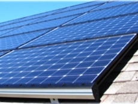
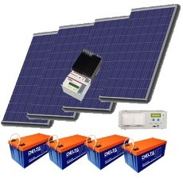

Рекомендации по выбору солнечных батарей

|
Как выбрать солнечные батареи для дома, на что обратить внимание при покупке? Основные типы солнечных батарей.  1. Солнечные батареи на основе монокристаллических кремниевых пластин. Достоинства солнечных батарей данного типа. Солнечные батареи этого типа наиболее эффективны, имеют небольшие размеры. Как следствие - необходимо меньшее количество панелей, по сравнению с панелями других типов, для создания одинаковой мощности, эти солнечные батареи займут меньше места на крыше дома. По сравнению с батареями других типов той же мощности. К недостаткам можно отнести следующее - монокристаллические солнечные панели дороже панелей других типов. Если главным, при выборе, является сочетание мощность батареи и качество, то это оптимальный выбор. 2. Поликристаллические солнечные батареи с элементами из поликристаллического кремния. Довольно эффективный тип солнечных элементов. Возможно это самый популярный тип по соотношению мощность/стоимость. В результате постоянного совершенствования технологии изготовления поликристаллических солнечных панелей, этот тип оборудования приближается к монокристаллическим солнечным панелям по соотношению мощность/площадь. По колличеству инсталляций поликристаллические батареи остаются на лидирующих позициях. 3. Солнечные батареи на тонкопленочном кремнии - самые доступные по цене, но и менее эффективные, чем два предыдущих типа солнечных батарей. Они занимают большую площадь и менее мощные. В большинстве случаев, для домашних солнечных энергетических систем выбирают качественные современные поликристаллические солнечные батареи.
Общие критерии выбора солнечных батарей.
 При выборе и покупке солнечных батарей необходимо помнить, что максимальная мощность солнечных батарей указывается в ваттах в час и именно от мощности наиболее зависит их цена. Чем мощнее солнечная фотоэлектрическая панель, тем она дороже. Солнечная панель на 110Вт в идеальных условиях будет генерировать 110Вт электроэнергии в час, а 235Втатт-ная панель будет генерировать 235 Ватт в час, поэтому будет значительно(почти в два раза) дороже.Мощность солнечной панели влияет на её размер, то есть более мощная солнечная панель будет иметь большую площадь, по сравнению с менее мощной батареей того же типа. Как видно из описания типов солнечных батарей - тип солнечных батарей также влияет на размер. Выбирая для покупки солнечную панель, необходимо убедиться, что покупаемая солнечная батарея, имеет достаточную мощность для своевременной зарядки системы питания техники и по размерам вписывается в то место, на которое вы планируете её монтировать. Кремниевые, тонкоплёночные панели дешевле, чем монокристаллические и поликристаллические. Они менее мощные и занимают гораздо большее пространство. Планируя установку солнечных батарей, необходимо также проанализировать, потребуется ли в будущем устанавливать дополнительные солнечные панели для наращивания мощности солнечной электростанции. Необходимо убедиться, что, например, на крыше осталось достаточно свободного места для возможности установки дополнительных панелей. Иначе можно столкнуться с такой проблемой - из-за нехватки места, наращивание мощности будет возможно, но только за счет замены установленных панелей на более мощные. Причем, возможно, придется производить такую замену, задолго до окончания срока годности находящихся в эксплуатации солнечных панелей. Прочность и долговечность панелей солнечных батарей имеет большое значение по понятному ряду причин. Во-первых, срок службы солнечных панелей должен быть достаточным для их окупаемости, то есть, за время эксплуатации они должны производить достаточно энергии, чтобы окупить себя. Из практики - хорошие солнечные панели должны иметь срок эксплуатации не менее 25 лет. Для покупки лучше выбирать батареи от известных производителей, с известным брэндом, чтобы иметь реальную возможность замены в течение гарантийного срока и возможность получить реальную квалифицированную консультацию или даже помощь в монтаже и подключении, если возникнет потребность масштабирования – наращивания мощности или в ремонте. Итак, стоимость солнечных батарей зависит от мощности, размеров, марки, надежности, наличия сертификатов соответствия и т.д. Выбор солнечных панелей только по критерию цена невозможен, поскольку необходимо учитывать все: реально имеющуюся площадь для установки, наличие сертификатов безопасности, приемлемый срок гарантии, реально необходимую мощность для обеспечения зарядки аккумуляторных элементов солнечной электростанции и т.д.  Рекомендации по выбору солнечных батарей
Все об альтернативной энергетике и энергосбережению
E-mail: _pvi@ukr.net
Все материалы на сайте предоставлены ИСКЛЮЧИТЕЛЬНО в ОЗНАКОМИТЕЛЬНЫХ и ОБРАЗОВАТЕЛЬНЫХ целях,
администрация сайта не претендует на их авторство и не несёт ответственности за их содержание. |